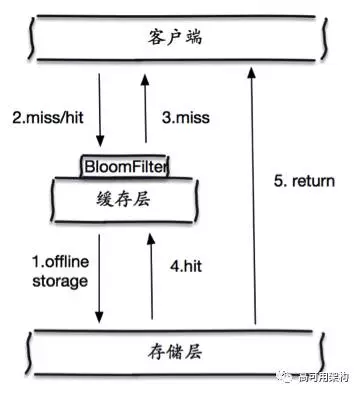
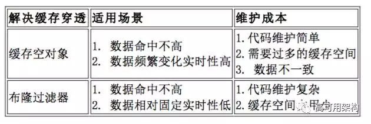

在访问缓存层和存储层之前，将存在的 key 用布隆过滤器提前保存起来，做第一层拦截。例如： 一个个性化推荐系统有 4 亿个用户 ID，每个小时算法工程师会根据每个用户之前历史行为做出来的个性化放到存储层中，但是最新的用户由于没有历史行为，就会发生缓存穿透的行为，为此可以将所有有个性化推荐数据的用户做成布隆过滤器。如果布隆过滤器认为该用户 ID 不存在，那么就不会访问存储层，在一定程度保护了存储层。
这种方法适用于数据命中不高，数据相对固定实时性低（通常是数据集较大）的应用场景，代码维护较为复杂，但是缓存空间占用少。
